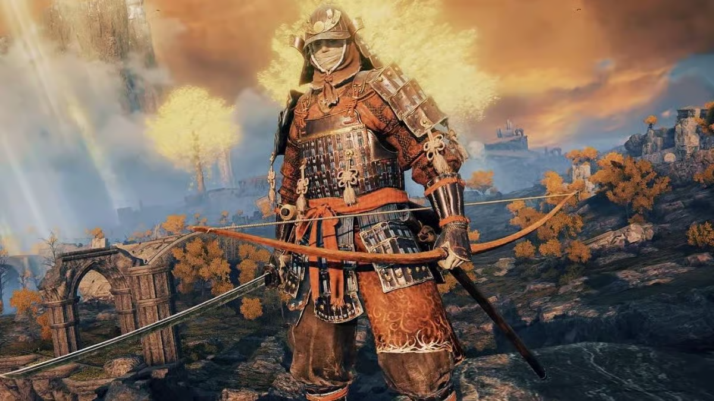
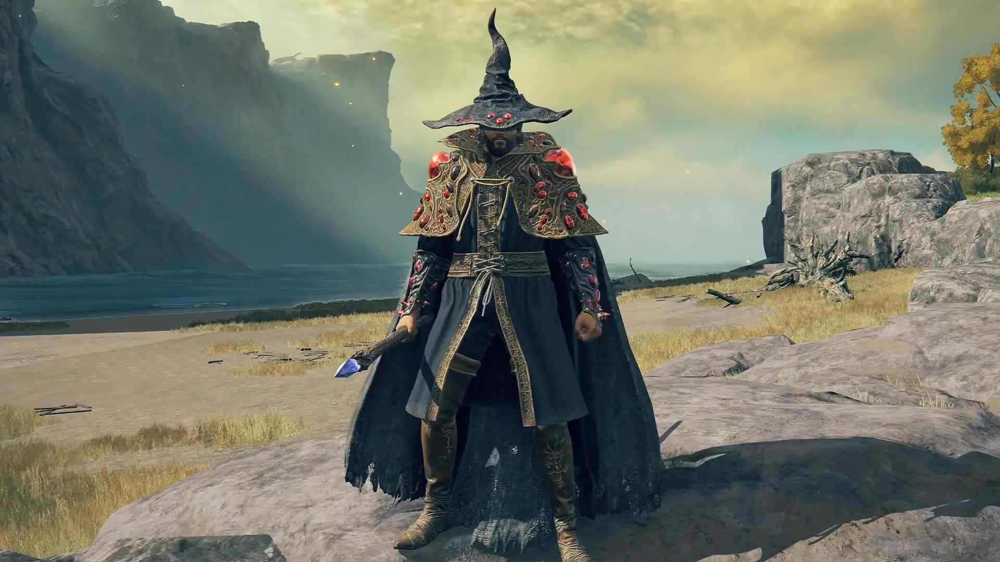
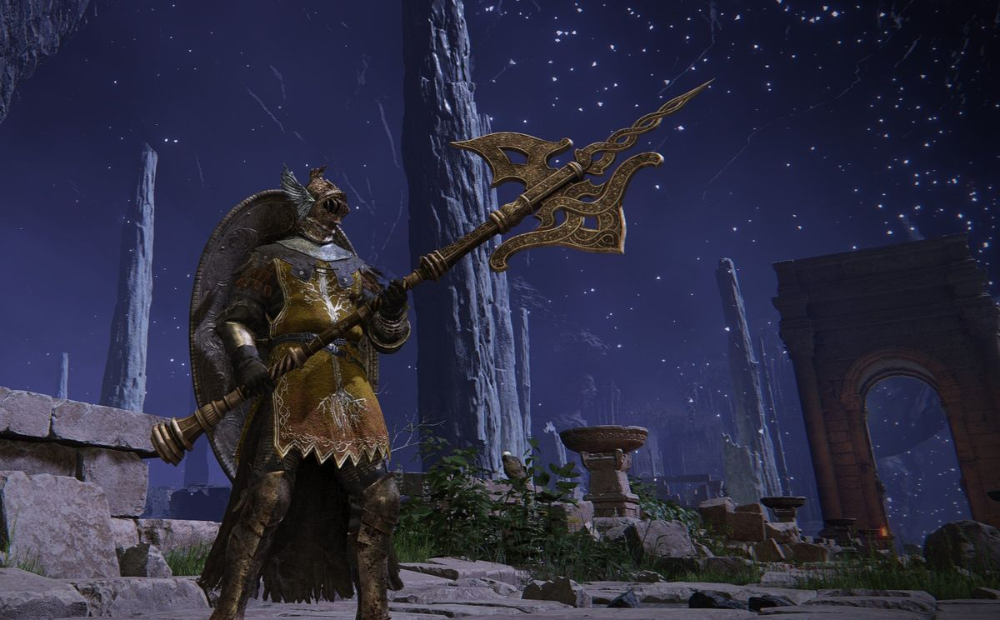
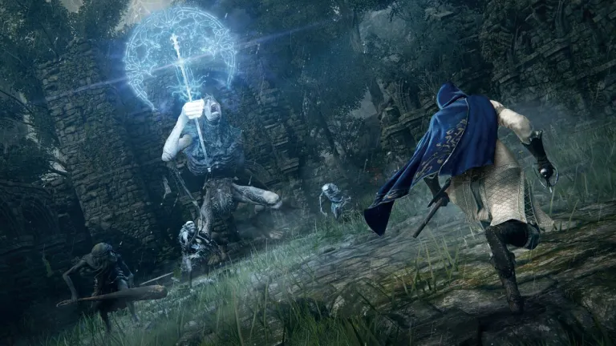
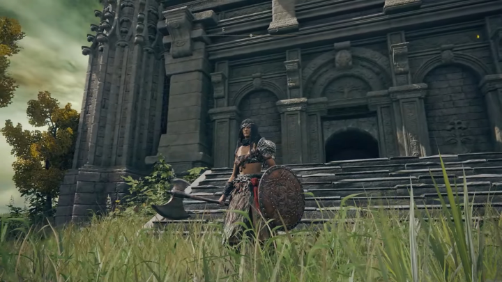
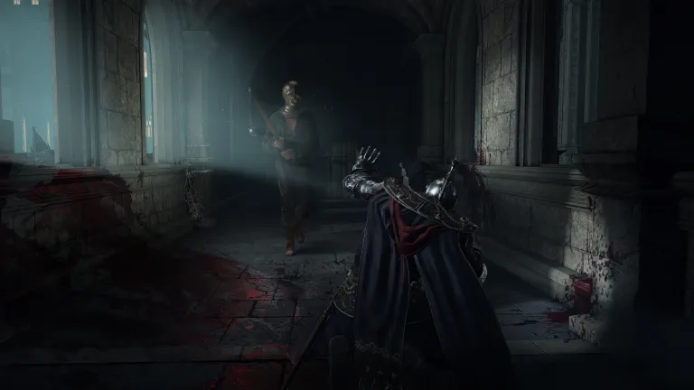
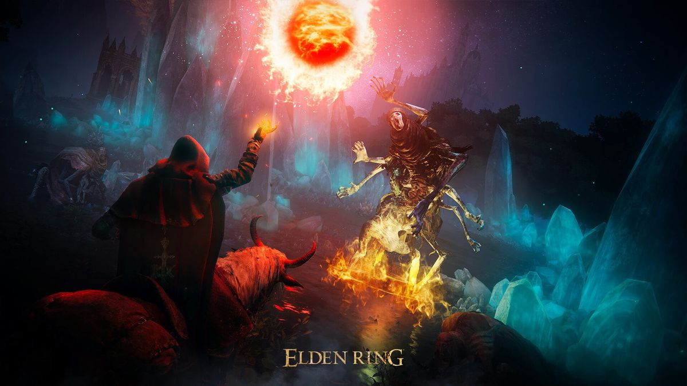

The Samurai class in Elden Ring is a versatile starting option that blends strong melee combat with ranged precision. Equipped with the Uchigatana, players can deal quick, bleed-inducing strikes that scale well throughout the game. The class also begins with a longbow, giving it reliable ranged capabilities right from the start, which is especially useful for pulling enemies or softening tough foes before engaging up close. With balanced starting stats in Dexterity, Strength, and Endurance, the Samurai offers flexibility for different builds, whether focusing on pure dexterity for swift weapon scaling or branching into hybrid setups. Its armor set, the Land of Reeds, provides decent early protection without being overly heavy, making it an excellent choice for players who want a balanced mix of offense, defense, and adaptability in their journey through the Lands Between.

The Astrologer class in Elden Ring is a starting class focused on intelligence and mind, making it a strong choice for players who want to specialize in sorceries and ranged magic combat. Beginning with high Intelligence and Mind stats, Astrologers can cast powerful spells early on, while their low strength and endurance make them less effective in melee combat. They start with the Glintstone Pebble and Glintstone Arc sorceries, giving them reliable ranged options against groups or single targets. Equipped with a staff and a small shield, the Astrologer excels at dealing magical damage from a distance, but requires careful positioning and resource management to avoid being overwhelmed in close quarters.

The Vagabond class in Elden Ring is a sturdy, melee-focused starting class designed for players who want a strong balance of offense and defense. With high Vigor, Strength, and Dexterity, the Vagabond excels in close combat and can wield a wide range of weapons and heavy armor effectively. Starting with a longsword, halberd, and a solid shield, this class offers both versatility and survivability, making it beginner-friendly while still being powerful in the late game. The Vagabond’s heavy armor provides excellent protection early on, allowing players to endure enemy blows and trade hits confidently, though it comes at the cost of higher equipment load and slower mobility.

The Warrior class in Elden Ring is a fast, dual-wielding melee fighter built around high Dexterity and agile combat. Starting with two scimitars and a light shield, the Warrior specializes in quick, fluid attacks that can overwhelm enemies with speed rather than sheer power. With strong Dexterity and decent Endurance, this class is well-suited for players who enjoy fast weapons, precise strikes, and dodging rather than blocking. While the Warrior’s lighter armor makes them more vulnerable to heavy hits, their mobility and offensive versatility allow skilled players to outmaneuver foes and deal consistent damage in both one-on-one duels and crowd encounters.

The Hero class in Elden Ring is a strength-focused warrior built for players who want to deal massive damage with heavy weapons. Beginning with high Strength and Vigor, the Hero can wield powerful axes and other large weapons early on, making them excel in raw melee combat. They start with a battle axe and a large shield, giving them both offensive power and solid defense at the beginning of the game. While their lower Dexterity and Mind limit versatility with faster weapons and magic, the Hero thrives in straightforward, hard-hitting playstyles, relying on heavy strikes and durability to overpower enemies.

The Prisoner class in Elden Ring is a hybrid fighter that combines sorcery with agile melee combat. Starting with high Intelligence and Dexterity, the Prisoner is well-suited for players who want to blend swift weapon strikes with powerful magic. They begin with an Estoc, a piercing thrusting sword, and the Magic Glintblade sorcery, supported by a shield for defense. Their balanced stats allow for versatility in both ranged and close-quarters combat, though their lighter armor and lower early-game endurance make them vulnerable if caught off guard. The Prisoner shines as a flexible class, rewarding players who enjoy switching fluidly between spellcasting and fast melee attacks.

The Confessor class in Elden Ring is a faith-based hybrid designed for players who want to blend melee combat with healing and support incantations. Starting with solid Faith, Mind, and balanced physical stats, the Confessor can effectively wield swords and shields while also casting restorative and utility spells. They begin with a broadsword, a kite shield, and the Urgent Heal and Assassin’s Approach incantations, making them versatile from the start. With medium armor and a good mix of offense and defense, the Confessor excels at sustaining themselves in battle and adapting to different situations, though they may not hit as hard as pure melee classes or cast as powerfully as dedicated spellcasters.